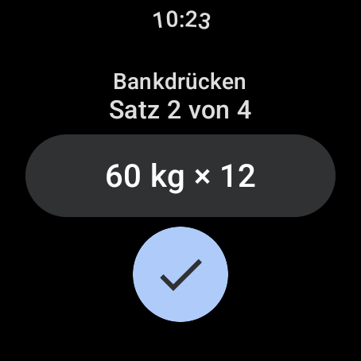
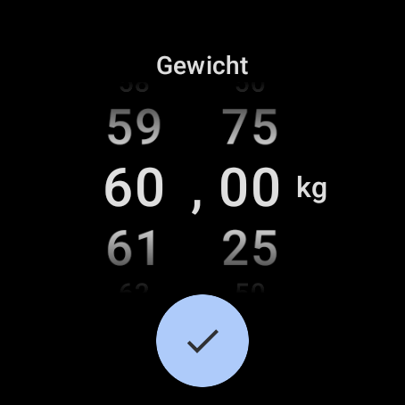
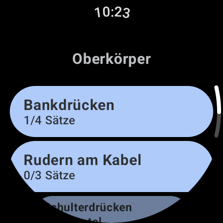
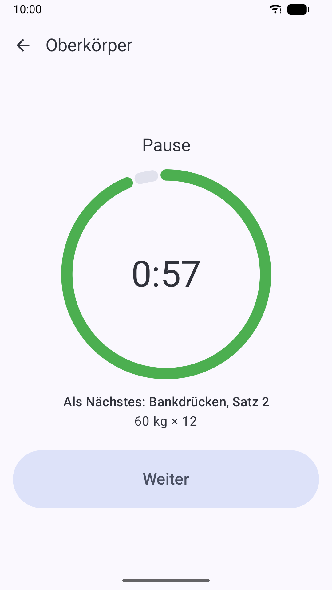
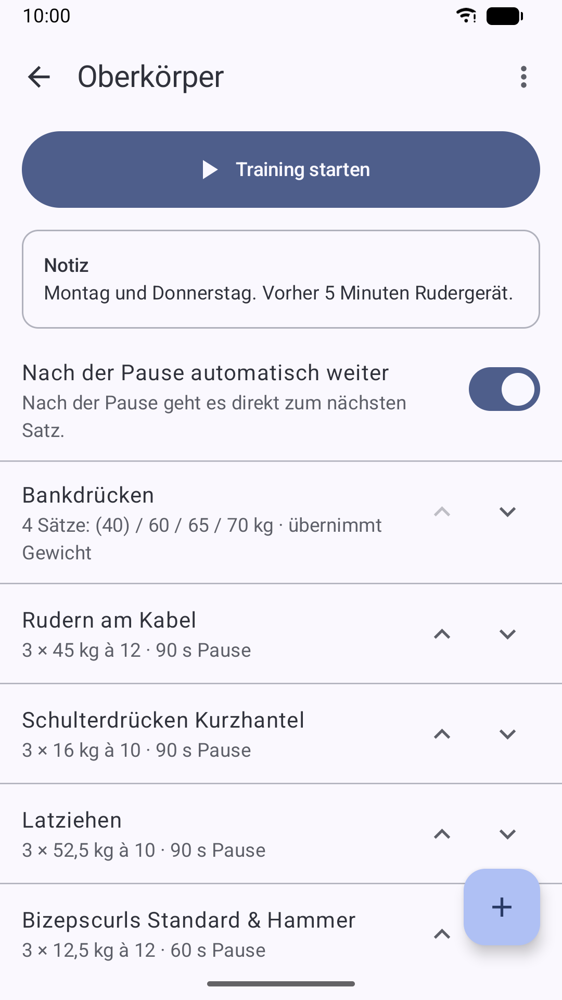
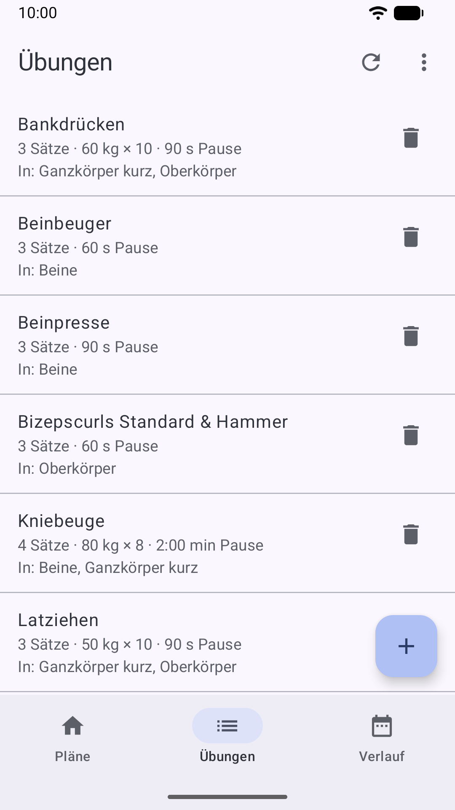
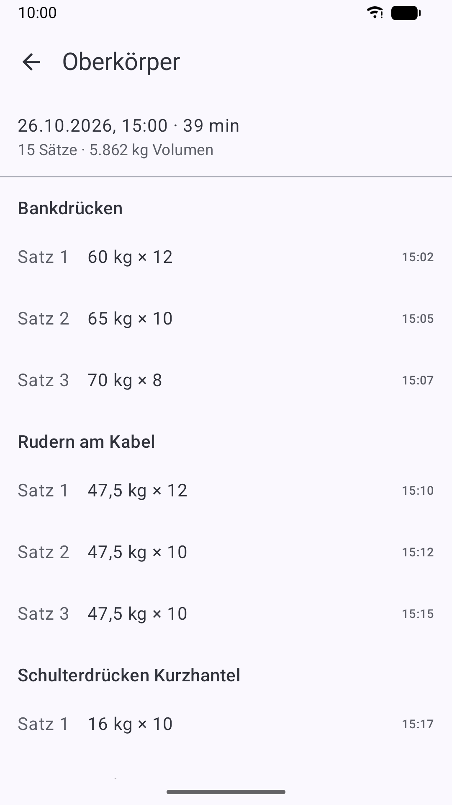
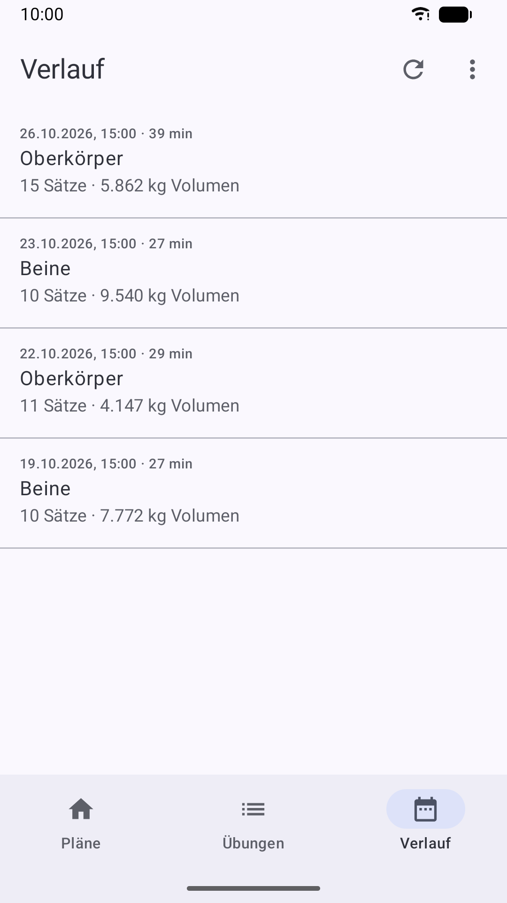

So läuft das Training
Im Studio brauchst du nur deine Uhr, oder dein Handy, wenn du keine Uhr hast. Große Schaltflächen und Vibration statt Ton, damit es auch mit verschwitzten Fingern klappt.
Plan wählen
Am Handy direkt starten, oder auf der Uhr: Die Pläne kommen vom Handy, danach geht es ohne Verbindung.
Satz abhaken
Gewicht und Wiederholungen stehen schon da. Ein Tipp genügt, ändern geht auch.
Pause läuft
Der Timer startet von selbst und vibriert kurz vor und am Ende der Pause.
Weiter im Plan
Nach dem letzten Satz kommt die nächste Übung, am Ende ist das Training gespeichert.
Funktionen
Trainieren kannst du an der Uhr oder am Handy, Pläne und Auswertung pflegst du am Handy. Mit Uhr gleichen sich beide automatisch ab, sobald sie verbunden sind.
Auf der Uhr
- Gewicht und Wiederholungen für jeden Satz kommen direkt aus deinem Plan
- Ein Tipp hakt den Satz ab, mit großen Schaltflächen
- Gewicht in 2,5-kg-Schritten ändern oder per Drehrolle genau auf 0,25 kg einstellen
- Pausentimer läuft auch bei ausgeschaltetem Display, mit Vorwarnung 10 Sekunden vor dem Ende und kräftiger Vibration
- Je Plan einstellbar: automatisch weiter oder Pause weiterzählen lassen, bis du „Weiter“ tippst
- Im laufenden Training einzelne Sätze hinzufügen oder weglassen
- Läuft im Studio ohne Handy und ohne Internet
Auf dem Handy
- Training auch ganz ohne Uhr: Sätze am Handy abhaken, mit Pausentimer, Vibration und Anzeige in der Benachrichtigung
- Übungen und Trainingspläne anlegen und die Reihenfolge festlegen
- Je Übung Standardwerte für Sätze, Gewicht, Wiederholungen und Pause, mit Überblick, in welchen Plänen sie vorkommt
- Sätze, Gewicht, Wiederholungen und Pause, auf Wunsch für jeden Satz einzeln (z. B. Pyramidentraining)
- Auf Wunsch übernimmt der Plan nach dem Training die tatsächlich bewegten Gewichte
- Notizen zu Plänen und Übungen, Fotos und Videos zur richtigen Ausführung
- Verlauf aller Trainings mit Datum und Uhrzeit, Sätze nachträglich korrigieren oder löschen, auch ganze Übungen oder Trainings
- Abgleich mit der Uhr per Knopf, mit Anzeige, wann zuletzt synchronisiert wurde
- Sicherung als Datei, Pläne mit Freunden teilen, Verlauf als CSV für Excel
Bildschirmfotos Uhr







Bildschirmfotos Handy











Der Pausentimer im Video
Satz abhaken, die Pause startet, die Uhr vibriert, wenn es weitergeht. So sieht das am Handgelenk aus.
▶ Auf YouTube ansehenGut zu wissen
Deine Daten bleiben bei dir
Keine Werbung, kein Konto, keine Anmeldung. Deine Trainingsdaten liegen nur auf deiner Uhr und deinem Handy. Details in der Datenschutzerklärung.
Voraussetzungen
- Android-Handy ab Android 10
- Optional: Smartwatch mit Wear OS 3 oder neuer, z. B. Samsung Galaxy Watch4 und neuer
- Mit Uhr: Sie braucht einmal die Verbindung zum Handy, danach trainierst du ohne
- Gewichte in Kilogramm
- App auf Deutsch, Englisch oder Französisch, passend zur Sprache des Geräts